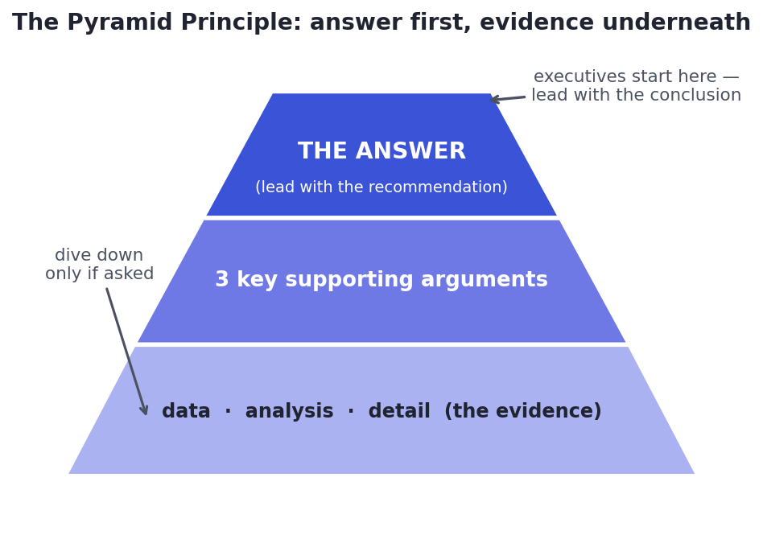

Start From the Decision
Who decides what, and what would change their mind.
Here's a hard truth that surprises new data scientists: the best analysis in the world is worth nothing if it doesn't change a decision. Communication is the last mile — and it's where most data-science work quietly dies, not because the analysis was wrong, but because the audience never understood it, or the recommendation was buried on slide 34. Your influence is capped not by how good your models are, but by how well you can make someone act on them. This track is that skill, and it may be the highest-leverage one in the whole course.
Different people, different needsRule zero: know your audience
The same finding must be told three different ways depending on who's listening:
- Executives want the answer and its business implication, fast. They have five minutes and care about the decision, not your methodology. Lead with "we should do X, here's the impact."
- Technical peers want the how — the method, assumptions, and validity — so they can trust and build on it. Here the rigour belongs front and centre.
- Business stakeholders (marketing, ops, product) want what it means for them and what to do — concrete, in their language, tied to their goals.
The single most common communication failure is showing executives a technical deep-dive, or giving engineers a vague summary. Match the message to the listener — same truth, different framing.
Lead with the conclusionThe Pyramid Principle: answer first
Analysts instinctively present the way they worked: here's the data, here's what I did, here's the analysis, and therefore (slide 34) here's the conclusion. That's backwards for decision-makers. The Pyramid Principle flips it: state the answer first, then the few key arguments that support it, then the data underneath — available if they want to dig, but not in the way:

This is also called BLUF — Bottom Line Up Front. Instead of "We analysed 18 months of data across five cohorts, controlling for seasonality, and after adjusting for...", you open with: "We should raise the free-trial length to 21 days — it would lift conversions ~15% with no revenue downside. Here's why." The executive now knows the decision in one breath; every word after that is earning the conclusion they already have, not making them wait for it.
A ruthless test for any report or email: if the reader stopped after the first sentence, would they know what you want them to do? If not, rewrite the opening. The conclusion is not a reward for reading to the end — it's the headline.
From number to meaningThe 'so what?' — insight, not output
A finding is not an insight. "Churn is 12% in the West region" is a finding — a fact. The insight is the "so what": "Churn in the West is double every other region because of the delivery delays there — fixing logistics could save ~$2M/year." Always push your output through the chain: finding → why it matters → what to do. If you can't articulate the "so what," you have a number, not a message — and numbers without meaning get ignored.
★ Key points to remember
- The last mile — making someone act — caps your impact more than model quality. Analysis that doesn't change a decision is wasted.
- Know your audience: executives want the answer + implication; technical peers want the method; stakeholders want what to do. Same truth, different framing.
- Pyramid Principle / BLUF: state the answer first, then key arguments, then supporting data — don't make decision-makers wait for the conclusion.
- Test any report: if they read only the first sentence, do they know what to do?
- Turn findings into insights via the "so what" chain: finding → why it matters → recommended action.
◆ Practice▸
Show solution & reasoning
Lead with the answer and its money implication, Pyramid-style: "Referral customers are worth ~40% more over their lifetime than paid-acquisition customers — we should shift budget toward the referral program, which could add roughly $3M in annual LTV. Three reasons: they retain longer, spend more per order, and cost less to acquire. (Methodology: two quarters of transaction data, cohort analysis controlling for seasonality and channel — details in the appendix.)" The rewrite states the recommendation and dollar impact in the first sentence, gives three supporting arguments, and demotes the methodology to a parenthetical/appendix — exactly the inversion the Pyramid Principle prescribes for a busy executive.
Show solution & reasoning
Example: Finding — "Feature X is used by only 4% of users." Why it matters — "...yet it consumes 30% of our engineering maintenance time and appears in 0 of our top retention drivers." So what / action — "We should either sunset Feature X or run one focused experiment to fix its discoverability; if that doesn't move usage, deprecating it frees ~1.5 engineers for higher-impact work." The point is to travel the chain from fact → implication (cost vs. value) → recommended decision. A good answer names the consequence of the 4% and proposes a concrete action — not just the statistic. (Any coherent context works; the skill is the finding→meaning→action structure.)
◎ Deep dive: why top-down persuades, and beating the curse of knowledge▸
Why answer-first feels wrong but works. Presenting your conclusion first can feel like 'giving away the ending' or seeming arrogant — analysts often want to show their work to earn trust. But decision-makers process top-down: they hold your conclusion in mind as a hypothesis and evaluate your evidence against it, which is far easier than assembling a conclusion themselves from a pile of facts. Leading with the answer also respects their time and signals confidence. The evidence still matters — it's right there in the pyramid's lower tiers — but it supports the message rather than delaying it. (The one exception: when you must first overcome strong disagreement, you may briefly build shared premises before landing the conclusion — but even then, get to it fast.)
The curse of knowledge is your biggest enemy. After weeks inside a problem, everything is obvious to you — the acronyms, the caveats, the reason a particular cohort matters. Your audience has none of that context, and the single hardest communication skill is remembering what they don't know. Concretely: define terms the first time, replace jargon with plain language, lead with the point before the detail, and cut the fascinating-but-irrelevant nuances you fell in love with during the analysis. A useful habit is to draft your summary, then ask "what would a smart person outside my team not understand here?" — and fix each spot. Clarity for the audience, not completeness for yourself, is the goal.